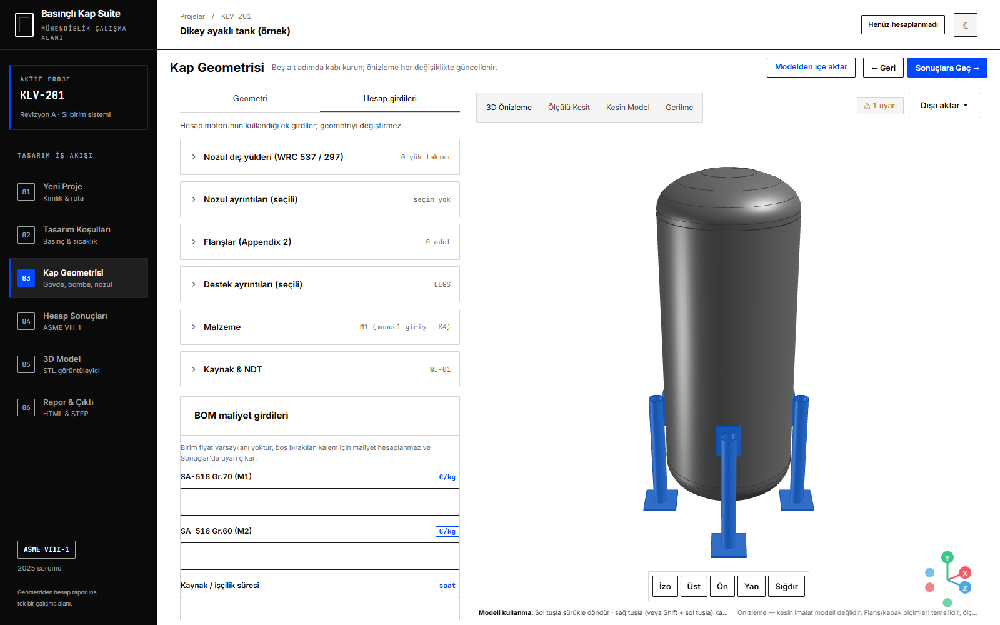
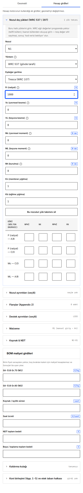
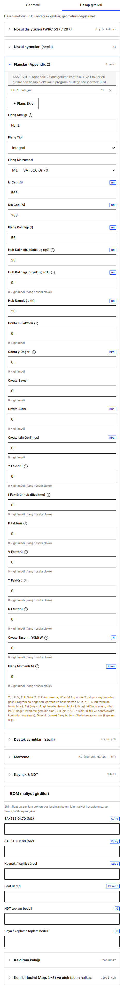
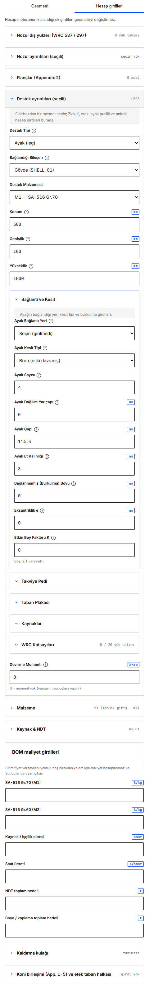
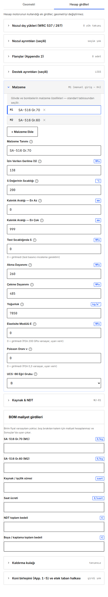
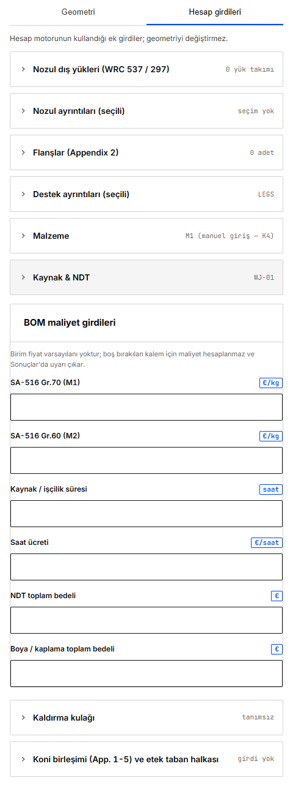
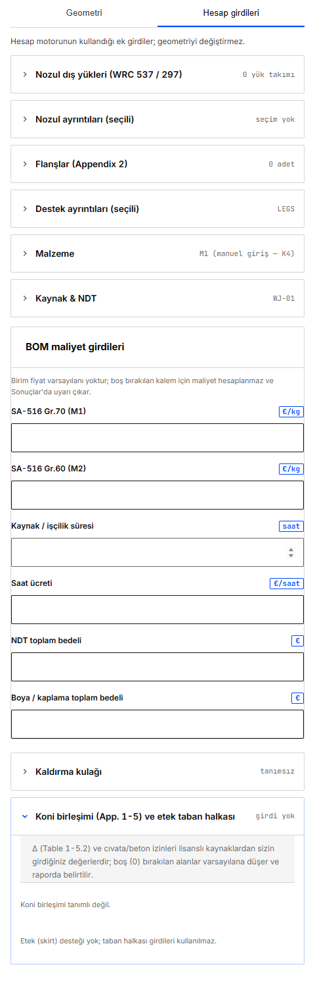
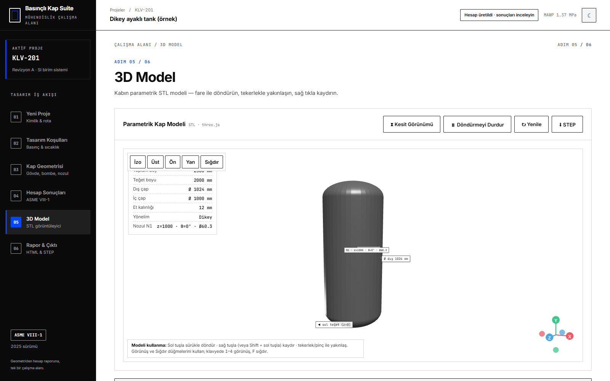
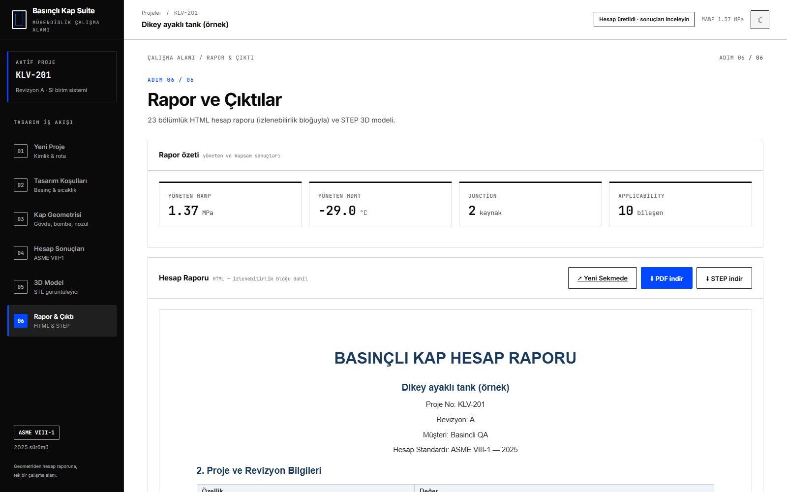

Adım 3 — Kap Geometrisi: "Hesap Girdileri" Sekmesi
Hesap Girdileri sekmesi, kabın üç boyutlu genel biçimini değiştirmeyen ancak mühendislik hesaplarının tamamlanabilmesi için zorunlu olan ek teknik verileri içerir. Bu ekranda boru hattı yükleri, flanş detayları, mesnet mukavemet parametreleri, malzeme dayanımları, kaynak kalitesi ve maliyet kalemleri tanımlanır. Akordeon paneller halinde düzenlenen bu başlıklar, kabın basınç altında güvenle çalışmasını sağlayacak ayrıntılı kontrolleri yönetir.

Şekil: Hesap girdileri sekmesi ve akordeon paneller
3.1. Nozul Dış Yükleri (WRC 537 / 297)
Bu ekran, kaba bağlanan tesisat borularının nozul (boru bağlantı ağzı) üzerinde oluşturduğu dış itme, çekme ve eğme kuvvetlerini tanımlamak içindir. Borulardan gelen bu mekanik yükler gövde sacında bölgesel gerilmelere yol açtığı için WRC (Welding Research Council - Kaynak Araştırma Konseyi teknik bülteni) yöntemleriyle kontrol edilir. Boru stres analizinden gelen kuvvetleri buraya girerek kabuk sacının yırtılmasını veya ezilmesini önleyecek doğrulamayı yapabilirsiniz.

Şekil: Nozul dış yükleri (WRC 537/297) formu
Nozul
Dış yük takımının atanacağı nozulu belirler. Açılır listeden daha önce Geometri adımında tanımlanmış olan nozul etiketleri (örneğin N1) seçilir. Yanlış nozul seçilirse kuvvetler yanlış gövde bölgesine uygulanır ve gerilme kontrolü yanıltıcı olur.
Yöntem
Bölgesel gerilme hesabında kullanılacak standart bülteni belirler. İki seçenek sunulur: "WRC 537 (gövde tarafı)" kabuk üzerindeki yerel gerilmeleri hesaplar; "WRC 297 (gövde + nozul)" hem kabuk hem de nozul boynundaki gerilmeleri analiz eder. Dikkat: WRC 297 yöntemi bu sürümde eğri normalizasyonu doğrulanmadığı için her zaman "kod verisi bekliyor" durumuna geçer.
Eşdeğer gerilme
Farklı yönlerdeki normal ve kayma gerilmelerinin tek bir karşılaştırma değerine dönüştürülmesinde esas alınacak hasar teorisidir. "Tresca (WRC 107)" azami kayma gerilmesi teorisine dayanır ve ASME standardının geleneksel tercihidir. "von Mises" ise biçim değiştirme enerjisi teorisine dayanır ve genellikle daha ekonomik sonuçlar verir.
Fr (radyal) (N)
Nozul ekseni boyunca etki eden radyal kuvvettir. Pozitif (+) değerler kabuktan dışarıya doğru çekmeyi, negatif (-) değerler kabuğa doğru basmayı ifade eder. Tesisat boru genleşme raporundan Newton (N) cinsinden alınır; yanlış girilirse kabuk ezilme veya çekme gerilmesi hatalı bulunur.
Vc (çevresel kesme) (N)
Kabın çevresi boyunca (çembersel teğet doğrultuda) etki eden kesme kuvvetidir. Boru hattının yan itmelerinden kaynaklanır. Sıfır bırakılırsa çevresel kesme kuvveti olmadığı varsayılır.
VL (boyuna kesme) (N)
Kabın uzunlamasına ekseni boyunca etki eden kesme kuvvetidir. Borunun boyuna genleşme veya kayma kuvvetlerinden doğar. Değeri boru stres analizinden alınmalıdır.
Mc (çevresel moment) (N·mm)
Nozulu kabın çevresel doğrultusunda eğmeye çalışan eğilme momentidir. Boru hattının termal genleşmesinden kaynaklanır. Birimi N·mm cinsindendir; kilonewton-metre (kN·m) cinsinden değer girilirse gerilmeler çok küçük kalır ve emniyetsiz sonuç doğar.
ML (boyuna moment) (N·mm)
Nozulu kabın boyuna ekseni boyunca eğmeye çalışan momenttir. Tesisat yüklerinden kaynaklanır; kabukta boyuna yönde çekme ve basma gerilmeleri oluşturur.
Mt (burulma) (N·mm)
Nozulun kendi merkez ekseni etrafındaki dönme (burulma) momentidir. Flanş cıvatalarının sıkılmasından veya boru hattının dönme etkilerinden oluşur.
Kn (membran yığılma)
Kabuk zar gerilmelerindeki yerel gerilme yığılma (konsantrasyon) katsayısıdır. Geometri süreksizliğinden kaynaklanan gerilme artışını hesaba katar. Değeri en az 1,0 olmalıdır; 1'den küçük girilirse sistem otomatik olarak 1 kabul eder.
Kb (eğilme yığılma)
Kabuk eğilme gerilmelerindeki yerel gerilme yığılma katsayısıdır. Kaynak dikişi ve köşe geçiş geometrisine bağlıdır; en az 1,0 olmalıdır.
WRC 537 eğri tablosu
WRC 537 bültenindeki boyutsuz eğrilerden okunan katsayı tablosudur. Telif hakları nedeniyle bu eğri katsayıları programda hazır bulunmaz; kullanıcının lisanslı bültenden ilgili nozul/kabuk parametrelerine göre okuyup elle girmesi gerekir. Boş bırakılan hücreler kesinlikle sıfır sayılmaz; herhangi bir hücre boş bırakılırsa hesap BLOCKED CODE DATA (kod verisi eksik) durumu verir ve durur. Tablo; P radyal yükü, Mc çevresel momenti ve ML boyuna momenti için kritik A, B, C ve D noktalarındaki membran kuvvetlerini (Nphi, Nx) ve eğilme momentlerini (Mphi, Mx) içeren 16 hücreden oluşur. Bu 16 katsayı hücresi şunlardır:
P (radyal) — A/B · Nphi [P.Nphi.AB]
P (radyal) — A/B · Nx [P.Nx.AB]
P (radyal) — A/B · Mphi [P.Mphi.AB]
P (radyal) — A/B · Mx [P.Mx.AB]
P (radyal) — C/D · Nphi [P.Nphi.CD]
P (radyal) — C/D · Nx [P.Nx.CD]
P (radyal) — C/D · Mphi [P.Mphi.CD]
P (radyal) — C/D · Mx [P.Mx.CD]
Mc — C/D · Nphi [MC.Nphi.CD]
Mc — C/D · Nx [MC.Nx.CD]
Mc — C/D · Mphi [MC.Mphi.CD]
Mc — C/D · Mx [MC.Mx.CD]
ML — A/B · Nphi [ML.Nphi.AB]
ML — A/B · Nx [ML.Nx.AB]
ML — A/B · Mphi [ML.Mphi.AB]
ML — A/B · Mx [ML.Mx.AB]
Bu nozulun yük takımını sil (düğme)
Seçili nozul için girilmiş olan tüm dış yükleri ve WRC katsayılarını tek tıklamayla temizler. Nozul üzerindeki dış kuvvet kontrollerini tamamen iptal etmek istediğinizde kullanılır.
Sık yapılan hatalar:
Kuvvetleri Newton (N) yerine kN, momentleri N·mm yerine N·m girmek gerilmelerin milyonda bir oranında yanlış hesaplanmasına yol açar.
WRC 537 eğri katsayılarını bültenden okumayıp boş bırakmak hesabın bloke olmasına neden olur.
3.2. Nozul Ayrıntıları (seçili nozul)
Bu ekran, kabın üzerindeki deliklerin (açıklıkların) ve boru boyunlarının ince ayarlarını yapmak için kullanılır. Açılan her delik kabuk sacını zayıflattığından, ASME UG-37 uyarınca çıkarılan metal alanının takviye edilmesi gerekir. Burada boru et kalınlığı, takviye pedi ve ASME UG-36(c)(3) küçük açıklık muafiyeti koşulları belirlenir.
Şekil: Nozul ayrıntıları formu ve kullanıcı muafiyet onay kutuları
Etiket (Tag)
Nozulun imalat çizimlerinde, hesap raporlarında ve isim plakalarında kullanılacak benzersiz adıdır (örneğin N1, N2 veya MANWAY).
Nozul Tipi
Nozulun gövdeye bağlanma ve konstrüksiyon şeklidir. Seçenekler:
Flanşlı: Standart boyunlu kaynak flanşı ile bağlanan boru nozulu.
Slip-on flanş: Borunun flanş içine geçirilip içeriden ve dışarıdan kaynatıldığı tip.
Soket kaynaklı: Küçük boruların yuva içine geçirilerek kaynatıldığı tip.
Manşon: Gövdeye kaynatılan dişli veya soketli küçük dövme bağlantı parçası.
Adam deliği (manway): Bakım personelinin girmesi için büyük çaplı gözetleme boğazı.
Nozulun kabuk üzerindeki yerleşim ölçüsüdür. Nozul gövdeye bağlıysa sol teğet çizgisinden itibaren eksenel uzaklığı (z) ifade eder. Bombe üzerindeyse bombe merkez ekseninden olan radyal mesafenin iki katını (yerleşim çapı) belirtir; 0 girilirse nozul tam bombe tepesine yerleşir.
Çevresel Açı (θ) (°)
Nozulun kabın çevresi etrafındaki dairesel konum açısıdır. 0° tam tepeyi (üst), 90° sağı, 180° alt tabanı, 270° solu temsil eder.
Eğim Açısı (α) (°)
Nozul borusunun kabuk yüzeyine diklikten sapma açısıdır. Gövdede 0° tam dik (radyal), 90° gövdeye teğetsel duruşu gösterir. Bombe üzerinde ise bombe yüzey normaline göre ölçülen eğimdir.
Anma Çapı (katalog)
Standart boru anma çapıdır (örneğin 2", 4", 6" NPS / DN boyutu). Katalogdan seçim yapıldığında dış çap, iç çap ve et kalınlığı otomatik dolar. Değerleri elle değiştirirseniz seçim "Özel ölçü (elle)" durumuna geçer.
Et Serisi
Boru standart et kalınlığı serisidir (örneğin SCH 40, SCH 80, SCH 160). Yalnızca katalogdan anma çapı seçildiğinde etkindir.
Nozul Malzemesi
Nozul borusunun imal edildiği çelik malzemedir. Tanımlı proje malzemeleri (örneğin MAT-01) arasından seçilir.
Dış Çap (mm)
Nozul borusunun milimetre cinsinden dış çapıdır. İmalat çiziminden veya boru katalog tablosundan alınır.
İç Çap (mm)
Nozul borusunun iç akış çapıdır. Açıklık takviye hesabında kovanın kabuktan çıkardığı metal alanını doğrudan belirler; yanlış girilirse takviye alanı hatalı hesaplanır.
Boyun Kalınlığı (mm)
Nozul borusunun nominal sac et kalınlığıdır. Nozulun iç basınca dayanımını ve gövdeye sunduğu takviye metal alanını belirler.
İç Çıkıntı (mm)
Nozul borusunun kabın iç cidarından içeriye doğru uzanan kısmının uzunluğudur. Boru içeride bitiyorsa 0 bırakılır; içeri uzanıyorsa iç takviye alanı (A3) kazandırır.
Dış Çıkıntı (mm)
Nozul flanş yüzeyinin kabın dış yüzeyinden itibaren dışarıya doğru olan toplam uzantı mesafesidir. İzolasyon payı ve cıvatalama boşluğu için önemlidir.
Takviye Pedi Dış Çapı (mm)
Nozul etrafına kaynatılan halka takviye sacının dış çapıdır. 0 bırakılırsa ped yok sayılır. Ped eklendiğinde açıklığın etrafındaki mukavemet alanı artar.
Pedi Kalınlığı (mm)
Takviye sacının et kalınlığıdır. Genellikle gövde et kalınlığına eşit veya yakın seçilir.
Açıklık Kaynak Verimi E1
ASME UG-37(a) uyarınca açıklığın kabuk kaynak dikişini kesip kesmediğini belirten katsayıdır (0,05 ile 1,0 arası). Açıklık ana boyuna veya çevresel kaynak dikişi üzerine denk geliyorsa o dikişin kaynak verimi girilmelidir. Boş (0) bırakılırsa program E1=1,0 (dikişsiz sac) varsayar ve inceleme uyarısı verir.
Kap hızlı basınç dalgalanmasına maruz değil
ASME VIII-1 Madde UG-36(c)(3) uyarınca küçük çaplı deliklerde (DN80 ve altı) takviye hesabı muafiyeti uygulanabilmesi için gereken ilk kullanıcı beyanı onay kutusudur. Bu kutuyu işaretleyerek kabın ani darbeli basınç değişimlerine maruz kalmadığını beyan edersiniz. Bu beyanın doğruluğu ve teknik sorumluluğu tamamen kullanıcıya aittir.
Komşu açıklık aralığı koşulları sağlanıyor
İki nozul arasındaki merkez mesafesinin standartta belirtilen asgari sınırları sağladığını onaylayan ikinci kullanıcı beyanı kutusudur. Sorumluluk kullanıcıya aittir.
Bağlantı kaynaklı (dişli/saplamalı/genişletmeli tip değil)
Nozulun kaba tam nüfuziyetli kaynakla bağlandığını teyit eden üçüncü kullanıcı beyanı kutusudur. Bu üç onay kutusu birlikte işaretlenmeden küçük açıklık muafiyeti uygulanmaz. Muafiyet uygulansa dahi nozul boyun kalınlığı kontrolü zorunlu olarak yapılır. Sorumluluk kullanıcıya aittir.
Sık yapılan hatalar:
Muafiyet onay kutularından birini eksik bırakıp küçük nozulların neden "takviye yetersiz" hatası verdiğini anlamamak.
Boru iç çapını korozyon payı düşmeden girmek veya dış çaptan et kalınlığını iki kez çıkarmayı unutmak.
3.3. Flanşlar (Appendix 2)
Bu ekran, standart boru flanşları haricinde özel olarak tasarlanan gövde veya nozul flanşlarının ASME Bölüm VIII Bölüm 1 Ek 2 (Appendix 2) kurallarına göre mukavemet hesabını yapmak içindir. Cıvata ön gerilmesi, conta sıkma gerilmesi ve çalışma basıncından kaynaklanan flanş eğilme gerilmeleri burada kontrol edilir.

Şekil: Flanşlar (Appendix 2) formu ve hesap parametreleri
＋ Flanş Ekle / flanş kartı / ✕ sil
Projeye yeni bir özel flanş kartı ekler, tanımlanmış flanşlar arasında geçiş yapar veya artık gerekmeyen flanş kaydını siler.
Flanş Kimliği
Flanşın hesap raporunda ve parça listesinde tanınmasını sağlayan benzersiz koddur (örneğin FL-1).
Flanş Tipi
Flanşın kabukla birleşim biçimidir. "Integral" (boyunlu kaynaklı flanş) kabukla tek parça çalışan tiptir. "Gevşek (loose)" ise geçme flanşı temsil eder; gevşek flanşlar bu formüllerle hesaplanmaz ve kapsam dışı kalır.
Flanş Malzemesi
Flanş bileziği ve boynunun imal edildiği malzemedir. Malzeme listesinden uygun malzeme seçilir.
İç Çap (B) (mm)
Flanş bileziğinin iç delik çapıdır. Genellikle kaba veya boruya uyumlu seçilir.
Dış Çap (A) (mm)
Flanş bileziğinin en dış kenar çapıdır. Cıvata dairesi ve et payını belirler.
Flanş Kalınlığı (t) (mm)
Flanş bileziğinin eksenel sac kalınlığıdır. Cıvata sıkma momentlerine karşı direnç sağlayan ana boyuttur.
Hub Kalınlığı, küçük uç (g0) (mm)
Flanş boynunun (hub) boru veya kabuk cidarında kalan ince ucunun et kalınlığıdır. Karakteristik boy h0 = √(B·g0) hesabında temel girdidir.
Hub Kalınlığı, büyük uç (g1) (mm)
Flanş boynunun flanş bileziğiyle birleştiği kalın dip noktasındaki et kalınlığıdır. Boş veya 0 bırakılırsa flanş hesabı kilitlenir (bloke olur).
Hub Uzunluğu (h) (mm)
Flanş boynunun flanş arkasından itibaren olan eksenel uzunluğudur.
Conta m Faktörü
Çalışma basıncı altında contanın gaz veya sıvıyı sızdırmadan tutabilmesi için gereken ek conta basınç faktörüdür. Lisanslı ASME Tablo 2-5.1 çizelgesinden veya conta tedarikçisinden alınmalıdır; program bu değeri otomatik içermez.
Conta y Değeri (MPa)
Contanın ilk montajda mikroskobik yüzey pürüzlerini doldurup sızdırmazlık sağlaması için gereken asgari oturma gerilmesidir. Lisanslı çizelgeden girilir; boş bırakılırsa cıvata hesabı yapılamaz.
Cıvata Sayısı (adet)
Flanşı sıkan dairesel dizilmiş saplama veya cıvata adedidir.
Cıvata Alanı (mm²)
Kullanılan cıvatanın diş dibi etkin çekme gerilme alanıdır. Standart cıvata tablosundan okunur.
Cıvata İzin Gerilmesi (MPa)
Cıvata çeliğinin tasarım sıcaklığında ASME standardınca izin verilen azami çekme gerilmesidir. Malzeme sertifikasından veya standardından girilmelidir.
Y Faktörü
Flanş dış çapı ile iç çapı oranına (K = A/B) bağlı boyut katsayısıdır. Lisanslı ASME Appendix 2 çizelgesinden kullanıcı tarafından okunup girilir; program telif nedeniyle bu tabloyu içermez (K6 kuralı). Boş bırakılırsa flanş hesabı bloke olur.
f Faktörü (hub düzeltme)
Boyun kalınlık oranına bağlı gerilme düzeltme katsayısıdır. ASME Ek 2 Şekil 2-7.6 grafiğinden okunmalıdır; boşsa hesap bloke kalır.
F Faktörü
Boyun esneklik faktörüdür. ASME Ek 2 Şekil 2-7.2'den okunur; program içermez.
V Faktörü
Boyun eğilme faktörüdür. ASME Ek 2 Şekil 2-7.3'ten okunur; boş bırakılamaz.
T Faktörü
Flanş şekil faktörüdür. ASME Ek 2 Şekil 2-7.1'den okunur; boşsa hesap bloke kalır.
U Faktörü
Flanş şekil faktörüdür. ASME Ek 2 Şekil 2-7.1'den okunur; boşsa hesap bloke kalır.
Cıvata Tasarım Yükü W (N)
Çalışma ve conta oturma şartlarında cıvatalara binen toplam tasarım çekme kuvvetidir. Kullanıcının Appendix 2 harici hesap sayfasından buraya aktarılır.
Flanş Momenti M (N·mm)
İç basınç, conta reaksiyonu ve cıvata kuvvetlerinin flanş halkası üzerinde oluşturduğu toplam eğilme momentidir. Kullanıcının harici hesap föyünden girilir.
Sık yapılan hatalar:
Büyük uç boyun kalınlığını (g1) girmemek flanş analizini doğrudan kilitler.
Y, f, F, V, T ve U faktörlerini ASME standart çizelgelerinden okumayıp sıfır bırakmak.
3.4. Destek Ayrıntıları (seçili destek)
Bu ekran, kabın zemin veya yapı üzerine oturmasını sağlayan mesnetlerin (ayak, eyer veya etek) mukavemet ve stabilite girdilerini içerir. Kabın kendi ağırlığı, içindeki sıvının ağırlığı, rüzgâr ve deprem momentleri bu mesnetler üzerinden temele aktarılır. Desteklerin kabuk sacında ezilme veya yırtılma yapmaması için gerekli tüm boyutlar burada tanımlanır.

Şekil: Destek ayrıntıları (ayak mesnet) genel formu
Destek Tipi
Kabı taşıyan mesnet türünü belirtir. Üç temel seçenek vardır:
Eyer (saddle): Yatay kapları iki noktadan beşik gibi saran mesnet (Zick analizine tabi).
Etek (skirt): Dikey kule ve proses kolonlarının tabanına kaynatılan silindirik taşıyıcı etek.
Ayak (leg): Dikey veya küçük yatay tankların altına kaynatılan profil veya boru ayaklar.
Bağlandığı Bileşen
Desteğin kaynaklandığı basınçlı kap parçasıdır. Eyer mesnet mutlaka silindirik gövdeye oturmalıdır; etek ve ayak ise gövdeye veya alt bombeye bağlanabilir.
Destek Malzemesi
Mesnet yapımında kullanılan yapısal çelik malzemedir (örneğin MAT-01 veya yapısal profil çeliği).
Konum (mm)
Desteğin montaj yeridir. Eyer için gövde sol teğetinden uzaklıktır. Etek ve ayak için ise taban kotudur ve devirme momenti kaldıraç kolunu belirler.
Genişlik (mm)
Desteğin eksenel temas genişliğidir. Eyerde sac plaka genişliğini ifade eder.
Yükseklik (mm)
Desteğin temel yüzeyinden kap eksenine kadar olan toplam düşey yüksekliğidir.
Devirme Momenti (N·mm)
(Bu alan etek veya ayak seçildiğinde görünür). Rüzgâr, deprem veya harici boru itmelerinden kaynaklanan devirme momentidir. Sıfır girilirse devirme momenti olmadığı varsayılır. Sistem, yük kombinasyonlarından türetilen moment ile bu manuel değeri karşılaştırıp büyük olanı esas alır.
Etek Ortalama Çapı (mm)
(Bu alan yalnız Etek desteği seçildiğinde görünür; Görsel: 62-etek-girdiler-destek.png). Etek silindirinin orta eksen çapıdır (D_ort = D_dış − t). Dış çap yerine mutlaka ortalama çap girilmelidir; aksi takdirde basma gerilmeleri %1-2 oranında emniyetsiz çıkar.
Etek İzin Verilen Basma B (UG-23(b)) (MPa)
(Bu alan yalnız Etek desteği seçildiğinde görünür). ASME UG-23(b) uyarınca eteğin kendi ağırlığı ve devirme momenti altında burkulmasını önleyen izin verilen basma gerilmesidir. ASME Bölüm II Kısım D dış basınç grafiklerinden okunur; program telifli tablosunu içermez. Girilmezse basma/burkulma kontrolü BLOKLU kalır.
Etek Kaynak Verimi E
(Bu alan yalnız Etek desteği seçildiğinde görünür). Etek sacı dikey birleşim kaynağının verimidir (0 ile 1 arası). 0 bırakılırsa program güvenli tarafta kalarak 0,6 varsayar.
Etek Et Kalınlığı (mm)
(Bu alan yalnız Etek desteği seçildiğinde görünür). Etek silindirinin nominal sac et kalınlığıdır; hesap için zorunludur.
Sarma Açısı (°)
(Bu alan yalnız Eyer desteği seçildiğinde görünür; Görsel: 52-yatay-girdiler-eyer-zick.png). Eyerin silindirik gövdeyi alttan kucakladığı sarma açısıdır (θ). Standart (Zick 1951) gereği en az 120° olmalıdır (tipik 120°–150°).
Eyer Düzleminde Halka
(Bu alan yalnız Eyer desteği seçildiğinde görünür). Eyer mesnedinin tam üzerine denk gelen gövde kesitinde takviye halkası bulunup bulunmadığıdır. Seçenekler: "Seçin (girilmedi)", "Halka yok", "Halka var". Seçim yapılmazsa Zick analizi BLOKE kalır.
Zick K1
(Bu alan yalnız Eyer seçildiğinde görünür). Eyer kesitindeki boyuna eğilme katsayısıdır. Zick 1951 veya Moss çizelgesinden sarma açısına göre okunur. Halkasız eyerde boş bırakılırsa hesap bloke olur.
Zick K2
(Bu alan yalnız Eyer seçildiğinde görünür). Kabukta oluşan teğetsel kesme gerilmesi katsayısıdır. Tablodan okunup girilmelidir.
Zick K3 (başlık kesmesi)
(Bu alan yalnız Eyer seçildiğinde görünür). Eyer bombeye çok yakın monte edildiğinde (mesafe A ≤ R/2) bombe üzerinde oluşan kesme katsayısıdır.
Zick K6
(Bu alan yalnız Eyer seçildiğinde görünür). Eyer boynuzunun (sacın bittiği üst uçların) kabukta oluşturduğu çevresel eğilme katsayısıdır.
Zick K7
(Bu alan yalnız Eyer seçildiğinde görünür). Eyerin tam altındaki kabuk sacında oluşan çevresel basma katsayısıdır; her eyer hesabında zorunludur.
Ayak Bağlantı Yeri
(Bu alan yalnız Ayak desteğinde görünür; Görsel: 30-girdiler-ayak-baglanti-kesit.png). Ayağın kaba kaynatıldığı yerdir. Seçenekler: "Seçin (girilmedi)", "Gövde (shell)", "Alt bombe (bottom head)". Yerel gerilme kontrolünün hangi parçaya uygulanacağını belirler.
Ayak Kesit Tipi
(Bu alan yalnız Ayak desteğinde görünür). Ayak profilinin enkesit formudur. Seçenekler: "Boru (eski davranış)", "Boru (pipe)", "U profil (channel)", "Kutu profil (box)", "Köşebent (angle)". Profil katalog değerleri programda yoktur, ölçüleri kullanıcı girer.
Ayak Sayısı (adet)
(Bu alan yalnız Ayak desteğinde görünür). Kabı taşıyan toplam ayak sayısıdır (genellikle 3 veya 4 adet).
Ayak Dağılım Yarıçapı (mm)
(Bu alan yalnız Ayak desteğinde görünür). Ayak merkezlerinin kabın düşey eksenine olan gerçek radyal mesafesidir; moment kolu hesabı için zorunludur.
Ayak Çapı (yalnız boru) (mm)
(Bu alan boru ayak seçildiğinde görünür). Boru profilinin milimetre cinsinden dış çapıdır.
Ayak Et Kalınlığı (yalnız boru) (mm)
(Bu alan boru ayak seçildiğinde görünür). Boru profilinin sac et kalınlığıdır.
Profil Yüksekliği (profilde) (mm)
(Bu alan profil ayak seçildiğinde görünür). U profil, kutu profil veya köşebentin kesit yüksekliğidir (h).
Profil Genişliği (profilde) (mm)
(Bu alan profil ayak seçildiğinde görünür). Profilin flanş/kanat genişliğidir (b).
Gövde (Web) Kalınlığı (profilde) (mm)
(Bu alan U profil veya kutu profilde görünür). Profil gövde sacı kalınlığıdır (tw).
Flanş Kalınlığı (yalnız U profil) (mm)
(Bu alan yalnız U profilde görünür). U profilin flanş et kalınlığıdır (tf).
Bağlanmamış (Burkulma) Boyu (mm)
(Bu alan yalnız Ayak desteğinde görünür). Ayağın yanal çaprazlarla tutturulmamış serbest burkulma boyudur.
Eksantriklik e (mm)
(Bu alan yalnız Ayak desteğinde görünür). Ayak ekseni ile kap cidar reaksiyonu arasındaki kaçıklık mesafesidir; ek eğilme momenti doğurur.
Etkin Boy Faktörü K
(Bu alan yalnız Ayak desteğinde görünür). Kolon burkulma etkin boy katsayısıdır. Boş bırakılırsa 2,1 (ankastre-serbest uç, muhafazakâr kabul) uygulanır.
Bağlantı Pedi Boyu (mm)
(Bu alan ayak pedi akordeonunda görünür; Görsel: 31-girdiler-ayak-takviye-pedi.png). Ayak ile kabuk sacı arasına konan takviye sacının düşey boyudur.
Bağlantı Pedi Eni (mm)
Ayak takviye pedinin yatay enidir.
Bağlantı Pedi Kalınlığı (mm)
Takviye pedinin sac et kalınlığıdır.
Ped Temas Oranı
Profil kesitinin takviye sacına kaynakla tam oturma yüzdesi (0 ile 1 arası). Boş bırakılırsa 1,0 (%100 tam temas) varsayılır.
Taban Plakası Boyu (mm)
(Bu alan taban plakası akordeonunda görünür; Görsel: 32-girdiler-ayak-taban-plakasi.png). Ayağın zemine bastığı çelik taban sacının boyudur.
Taban Plakası Eni (mm)
Taban sacının milimetre cinsinden enidir.
Taban Plakası Kalınlığı (mm)
Taban sacının et kalınlığıdır; eğilme mukavemetini sağlar.
Taban Plakası Akma Dayanımı (MPa)
Taban sacının akma gerilmesidir (Fy). Malzeme sertifikasından siz girin.
Rüzgâr veya depremden kaynaklanıp ayak tabanına aktarılan toplam yatay kesme kuvvetidir; ankraj kesme kontrolünde kullanılır.
Ped–Gövde Kaynak Bacağı (mm)
(Bu alan kaynaklar akordeonunda görünür; Görsel: 33-girdiler-ayak-kaynaklar.png). Takviye sacını gövdeye bağlayan köşe kaynağının bacak ölçüsüdür.
Ayak–Ped Kaynak Bacağı (mm)
Profil ayağı takviye pedine bağlayan köşe kaynağının bacak boyudur.
Ayak–Taban Plakası Kaynak Bacağı (mm)
Profil ayağı alt taban plakasına birleştiren köşe kaynak bacak boyudur.
Elektrot Dayanımı Fexx (MPa)
Kaynak elektrodunun nominal çekme dayanımıdır (örneğin E70 serisi elektrotlar için yaklaşık 480 MPa).
Asgari Köşe Kaynak Bacağı (mm)
İlgili standardın (örneğin AWS D1.1) birleşen parçaların kalınlığına göre zorunlu kıldığı en küçük köşe kaynak bacağıdır.
ML Eğrisi β
(Bu alan WRC katsayıları akordeonunda görünür; Görsel: 34-girdiler-ayak-wrc.png). Ayak boyuna momenti için WRC bülteninden okunan boyutsuz ataçman parametresidir. Boyuna moment varken boş bırakılırsa WRC hesabı kilitlenir.
MC Eğrisi β
Ayak çevresel momenti için WRC bülteninden okunan boyutsuz parametredir; çevresel moment varsa zorunludur.
WRC Katsayıları tablosu
Ayak mesnedinin gövde üzerinde oluşturduğu yerel gerilmeleri çözmek için WRC bülteninden okunan boyutsuz katsayılar tablosudur. Aktif dış yük varken bu katsayılar boş bırakılırsa analiz kilitlenir. Tablo; A, B, C ve D köşe noktalarında etkiyen 5 yük tipi (P radyal, ML boyuna moment, MC çevresel moment, VL boyuna kesme, VC çevresel kesme) altında oluşan 4 gerilme bileşenini (Nx, Ny membran kuvvetleri ile Mx, My eğilme momentleri) içeren toplam 80 hücreden oluşur. Bu 80 hücrenin tam listesi aşağıdadır:
Nokta A · P (radyal) · Nx, Ny, Mx, My
Nokta A · ML (boyuna moment) · Nx, Ny, Mx, My
Nokta A · MC (çevresel moment) · Nx, Ny, Mx, My
Nokta A · VL (boyuna kesme) · Nx, Ny, Mx, My
Nokta A · VC (çevresel kesme) · Nx, Ny, Mx, My
Nokta B · P (radyal) · Nx, Ny, Mx, My
Nokta B · ML (boyuna moment) · Nx, Ny, Mx, My
Nokta B · MC (çevresel moment) · Nx, Ny, Mx, My
Nokta B · VL (boyuna kesme) · Nx, Ny, Mx, My
Nokta B · VC (çevresel kesme) · Nx, Ny, Mx, My
Nokta C · P (radyal) · Nx, Ny, Mx, My
Nokta C · ML (boyuna moment) · Nx, Ny, Mx, My
Nokta C · MC (çevresel moment) · Nx, Ny, Mx, My
Nokta C · VL (boyuna kesme) · Nx, Ny, Mx, My
Nokta C · VC (çevresel kesme) · Nx, Ny, Mx, My
Nokta D · P (radyal) · Nx, Ny, Mx, My
Nokta D · ML (boyuna moment) · Nx, Ny, Mx, My
Nokta D · MC (çevresel moment) · Nx, Ny, Mx, My
Nokta D · VL (boyuna kesme) · Nx, Ny, Mx, My
Nokta D · VC (çevresel kesme) · Nx, Ny, Mx, My
Sık yapılan hatalar:
Etek ortalama çapı yerine dış çap girmek basma gerilmesini olduğundan küçük göstererek tehlike yaratır.
Eyer sarma açısını 120 derecenin altında belirleyip kabukta ezilmeye yol açmak.
3.5. Malzeme
Bu ekran, kabın basınç taşıyan parçalarının (gövde, bombeleler, nozullar) çelik malzeme özelliklerini tanımlar. Telif hakları kısıtlaması nedeniyle ASME standart gerilme tabloları programın içinde gömülü olarak yer almaz. Bu nedenle izin verilen gerilme, akma dayanımı ve çekme dayanımı gibi kritik sayıları malzeme sertifikanızdan veya ilgili standardın tablosundan siz girmelisiniz; boş (0) bırakılırsa hesap hata verir.

Şekil: Malzeme tanımlama ve mekanik özellikler formu
Malzeme listesi: seçim kartı / + Malzeme Ekle / ✕ sil
Projede tanımlı malzemeleri (örneğin MAT-01) listeler, yeni malzeme kartı ekler veya kullanılmayan malzemeyi siler.
Malzeme Tanımı
Malzemenin resmî standart sertifikasındaki adıdır (örneğin SA-516 Gr. 70 veya SA-240 Type 304).
İzin Verilen Gerilme (S) (MPa)
Malzemenin tasarım sıcaklığındaki azami izin verilen gerilmesidir. Kabın gerekli et kalınlığını doğrudan belirleyen en temel sayıdır. Bu değeri malzeme sertifikanızdan veya ilgili standardın tablosundan siz girin; boş (0) bırakılırsa hesap hata verir.
S Değerinin Sıcaklığı (°C)
Yukarıdaki S gerilme değerinin okunduğu sıcaklıktır. İkinci adımdaki tasarım sıcaklığıyla aynı olmalıdır; farklı girilirse program gerilmenin doğrulanmadığını belirten inceleme uyarısı verir.
Kalınlık Aralığı — En Az (mm)
Girilen gerilme değerinin geçerli olduğu en küçük plaka kalınlığı sınırıdır.
Kalınlık Aralığı — En Çok (mm)
Girilen gerilme değerinin geçerli olduğu en büyük sac kalınlığı sınırıdır (0 girilirse 999 mm sayılır).
Test Sıcaklığında S (MPa)
Malzemenin hidrostatik test sıcaklığındaki (genellikle 20 °C) izin verilen gerilmesidir. UG-99(b) formülündeki LSR (test sıcaklığı / tasarım sıcaklığı gerilme oranı) için gerekir. Bu değeri sertifikanızdan veya standarttan siz girin; boş (0) bırakılırsa test basıncı hesabı doğrulanamaz ve inceleme gerektirir.
Akma Dayanımı (MPa)
Malzemenin kalıcı şekil değiştirmeye başladığı gerilme sınırıdır (Fy). Bu değeri malzeme sertifikanızdan veya standardın tablosundan siz girin; boş (0) bırakılırsa hesap hata verir.
Çekme Dayanımı (MPa)
Malzemenin kopmadan önce ulaşabildiği en yüksek çekme gerilmesidir (Fu). Bu değeri malzeme sertifikanızdan veya ilgili standardın tablosundan siz girin; boş (0) bırakılırsa hesap hata verir.
Yoğunluk (kg/m³)
Çeliğin birim hacim kütlesidir (karbon çeliği için tipik 7850 kg/m³). Kabın metal ağırlığını hesaplamada kullanılır.
Elastisite Modülü E (MPa)
Malzemenin elastik şekil değiştirme direncidir (Young modülü). Yalnızca sonlu elemanlar (FEA) yer değiştirme hesaplarında kullanılır; kapalı form ASME formüllerini etkilemez. Boş (0) bırakılırsa 200.000 MPa varsayılır.
Poisson Oranı ν
Malzemenin enine daralma oranını gösteren boyutsuz katsayıdır. Yalnızca FEA için kullanılır; 0 ile 0,5 arasında olmalıdır, boş bırakılırsa 0,3 varsayılır.
UCS-66 Eğri Grubu
ASME UCS-66 uyarınca malzemenin darbe tokluğu (gevrek kırılma direnci) eğri grubudur. Seçenekler: "— girilmedi —", "A", "B", "C", "D". Malzeme belgesinden seçilmelidir; girilmezse MDMT (en düşük tasarım metal sıcaklığı) kontrolü yapılmaz.
Sık yapılan hatalar:
İzin verilen gerilme (S) veya akma dayanımını girmeyip 0 bırakmak (hesap anında hata verir ve kalınlık türetilemez).
Tasarım sıcaklığındaki S değeri yerine oda sıcaklığındaki gerilmeyi girerek yüksek sıcaklıkta kabı zayıf tasarlamak.
3.6. Kaynak & NDT
Bu ekran, kabın imalatında kullanılan kaynak dikişlerinin verim katsayısını ve uygulanacak tahribatsız muayene (NDT/NDE) seviyesini belirler. Kaynak dikişinin kalitesi ve denetim sıklığı arttıkça kaynak verimi artar ve gövdenin gerekli et kalınlığı azalır.
Şekil: Kaynak verimi ve NDT (tahribatsız muayene) girdi formu
Kaynak listesi: seçim kartı / + Kaynak Ekle / ✕ sil
Tanımlı kaynak birleşimlerini (örneğin boyuna dikiş için WJ-01, çevresel dikiş için WJ-02) yönetir; yeni kaynak tipi ekler veya siler.
Kaynak Verimi (E)
Kaynak dikişinin ana metal kadar yük taşıyabilme katsayısıdır (0,70 ile 1,00 arası). Yapılan radyografik denetime bağlıdır: %100 tam röntgen kontrolü için 1,00; lokal spot kontrol için 0,85; kontrolsüz kaynak için 0,70 girilir. Et kalınlığı formülünde paydada yer alır; verim düştükçe gerekli sac kalınlığı artar.
NDE Yöntemi
Uygulanan tahribatsız muayene yöntemidir (örneğin RT = Radyografik Röntgen, UT = Ultrasonik, PT = Sıvı Penetrant).
NDE Kapsamı
Kaynağın ne kadarlık kısmının muayene edileceğidir (örneğin "100%" tam muayene veya "spot" bölgesel muayene).
Seçili gövde (…) kaynak birleşimi
Geometride seçilmiş olan gövde kesitinin boyuna kaynak dikişine listedeki hangi kaynak tanımının atanacağını belirler. "— yok —" seçilirse kaynak verimi atanamaz.
Sık yapılan hatalar:
Röntgen kontrolü yapılmayacak bir kaynağa E = 1,00 yazarak sacı olması gerekenden çok daha ince hesaplatmak.
Gövde veya bombe kartlarında kaynak birleşimini boş bırakmak.
3.7. BOM Maliyet Girdileri
Bu ekran, kabın tahmini imalat bütçesini hesaplamak için kullanılan birim fiyat ve işçilik girdilerini içerir. BOM (Bill of Materials - Malzeme Listesi) kartı, metal ağırlıkları ile bu birim fiyatları çarparak yaklaşık bir maliyet tablosu üretir.

Şekil: BOM (Malzeme listesi) birim fiyat ve işçilik maliyet girdileri
<Malzeme tanımı> (<ID>) birim fiyatı (malzeme başına bir alan) (€/kg)
Projede tanımlı her bir malzeme için kilogram başına satın alma fiyatıdır. Varsayılanı yoktur; boş bırakılırsa o malzeme için parasal maliyet hesaplanmaz ve sonuçlarda uyarı çıkar.
Kaynak / işçilik süresi (saat)
Kabın kesim, kaynak ve montaj işçiliği için harcanacak toplam tahmini adam-saat süresidir.
Saat ücreti (€/saat)
Atölye işçiliğinin saatlik birim maliyetidir.
NDT toplam bedeli (€)
Kaynak muayeneleri (röntgen, ultrason vb.) için dışarıdan alınan laboratuvar veya denetim hizmetinin toplam sabit tutarıdır.
Boya / kaplama toplam bedeli (€)
Kabın kumlama, astar ve dış koruyucu boya işlemleri için ödenecek toplam sabit tutardır.
Sık yapılan hatalar:
Birim fiyatları boş bırakıp maliyet tablosunda neden toplam maliyet görünmediğini merak etmek.
3.8. Kaldırma Kulağı
Bu ekran, kabın atölyede veya sahada vinçle güvenle kaldırılabilmesi için üzerine kaynatılan kaldırma kulaklarının mukavemetini hesaplar. Kaldırma sırasında sacın delikten yırtılması, kaynak dikişinin kopması ve kabuk cidarının bükülmesi burada kontrol edilir.
Kaba kaldırma kulağı ekler veya mevcut kulakları kaldırır. Kulak eklenmezse kaldırma analizi çalıştırılmaz.
Kulak sayısı (adet)
Kaldırma için kaba kaynatılan kulak adedidir (1 ile 4 arası). Mühendislik standartları gereği 3 veya 4 kulak tanımlansa dahi yükün yalnız 2 kulak tarafından eşit paylaşıldığı tutucu varsayımı uygulanır.
Konum
Kulakların kaynaklandığı yerdir. Seçenekler: "Gövde üstü" veya "Bombe".
Plaka kalınlığı t (mm)
Kaldırma kulağının imal edildiği çelik sacın et kalınlığıdır.
Plaka genişliği b (mm)
Kaldırma sacının yatay genişliğidir.
Delik çapı (mm)
Vinç kilit piminin (şakülün) geçeceği yuvarlak deliğin çapıdır. Pim çapından biraz büyük olmalıdır.
Delik merkezi-kenar mesafesi e (mm)
Deliğin merkezinden plakanın en yakın dış serbest kenarına olan mesafedir. Deliğin yırtılmaması için kritik boyuttur.
Delik yüksekliği h (kabuktan) (mm)
Delik merkezinin kabuk cidarından itibaren yüksekliğidir; kabuk üzerinde oluşacak eğilme moment kolunu oluşturur.
Darbe katsayısını 1,0 alarak vincin dinamik sarsıntı payını sıfır saymak.
3.9. Koni Birleşimi (App. 1-5) ve Etek Taban Halkası
Bu ekran; silindirik gövde ile konik daralma/genişleme parçalarının birleştiği kavşak noktalarındaki takviye halkası ihtiyacını ve dikey proses kolonlarının etek taban halkası ile ankraj cıvatası mukavemetini hesaplar.

Şekil: Koni birleşimi ve etek taban halkası girdi ekranı
(Bu alan yalnız gövde zincirinde koni eklendiğinde görünür). ASME Ek 1-5 Tablo 1-5.2'den okunan koni birleşim açısı katsayısıdır. Boş veya 0 bırakılırsa sistem güvenli tarafta kalarak Δ = 0° kabul eder ve takviye ihtiyacını buna göre değerlendirir.
<Junction> ek halka alanı (koni birleşimi başına) (mm²)
(Bu alan yalnız gövde zincirinde koni eklendiğinde görünür). Koni birleşim dikişine dışarıdan eklenen takviye profili veya halkasının net enkesit alanıdır.
Halka dış çapı (mm)
(Bu alan yalnız Etek desteği tanımlı olduğunda görünür; Görsel: 63-etek-girdiler-taban-halkasi.png). Dikey kolon eteğinin tabanında betona basan çelik halkanın dış çapıdır.
Halka iç çapı (mm)
(Bu alan yalnız Etek desteği tanımlı olduğunda görünür). Etek taban halkasının iç delik çapıdır.
Halka kalınlığı (mm)
(Bu alan yalnız Etek desteği tanımlı olduğunda görünür). Taban halkasının sac et kalınlığıdır. Beton ezilme basıncına ve cıvata çekmesine karşı eğilme direncini sağlar.
Halka Fy (MPa)
(Bu alan yalnız Etek desteği tanımlı olduğunda görünür). Taban halkası sacının akma dayanımıdır; malzeme sertifikasından siz girin.
Cıvata dairesi çapı (mm)
(Bu alan yalnız Etek desteği tanımlı olduğunda görünür). Ankraj cıvatalarının dizildiği eksenel çemberin çapıdır.
Cıvata adedi (adet)
(Bu alan yalnız Etek desteği tanımlı olduğunda görünür). Taban halkasındaki toplam ankraj cıvatası sayısıdır.
Cıvata çapı (mm)
(Bu alan yalnız Etek desteği tanımlı olduğunda görünür). Ankraj cıvatasının milimetre cinsinden anma diş çapıdır.
Cıvata izin çekme (MPa)
(Bu alan yalnız Etek desteği tanımlı olduğunda görünür). Ankraj cıvatası çeliğinin izin verilen çekme gerilmesidir. Girilmesi zorunludur (K6 kuralı); bu değer boş bırakılırsa hesap BLOCKED (engellendi) döner.
Cıvata izin kesme (MPa)
(Bu alan yalnız Etek desteği tanımlı olduğunda görünür). Ankraj cıvatasının izin verilen kayma gerilmesidir; rüzgâr veya deprem gibi yatay taban yükleri varken zorunludur.
Beton f'c (MPa)
(Bu alan yalnız Etek desteği tanımlı olduğunda görünür). Temel betonunun 28 günlük karakteristik silindir basınç dayanımıdır (örneğin C25 sınıfı beton için 25 MPa).
Beton izin yataklık (opsiyonel) (MPa)
(Bu alan yalnız Etek desteği tanımlı olduğunda görünür). Betonun ezilmeye karşı emniyetli yataklık gerilmesidir. Boş bırakılırsa standart formülle (0,85 · f'c / 2,31) hesaplanır.
Sık yapılan hatalar:
Cıvata izin verilen çekme gerilmesini girmeyip etek taban hesabı sonucunun neden bloke kaldığını aramak.
Taban halkası dış çapını etek çapından küçük girerek geometrik uyumsuzluk yaratmak.
Adım 4 — Hesap Sonuçları
Hesap Sonuçları ekranı, girdiğiniz tüm ölçülerin, malzemelerin ve yüklerin ASME Bölüm VIII Bölüm 1 standardına göre çözümlendiği ve tasarımın emniyetinin onaylandığı merkezi rapordur. Bu ekranda her bir parçanın basınç dayanımı, korozyon payı düşüldükten sonra kalan et kalınlığı ve emniyet katsayıları topluca listelenir.
Şekil: Hesap sonuçları özet paneli ve temel göstergeler (KPI)Şekil: Hesap sonuçları tam kontrol tabloları
Hesapla / ↻ Yeniden Hesapla (düğme)
Proje verilerini hesaplama motoruna göndererek tüm formülleri baştan çözer. Geometride veya girdilerde herhangi bir değişiklik yapıldığında sonuçları güncellemek için bu düğmeye basılır.
Gerekli kalınlık (required thickness)
Standart formüllerine göre kabın uygulanan iç veya dış basınca güvenle dayanabilmesi için fiziksel olarak sahip olması gereken net asgari metal kalınlığıdır. Bu değere korozyon payı ve sac imalat toleransı dahil değildir. Bir sacın güvenli sayılması için, korozyon payı düşülmüş gerçek kalınlığının bu gerekli kalınlıktan büyük olması şarttır.
Nominal kalınlık (nominal thickness)
Tasarımda girdiğiniz ve fabrikadan satın alınacak olan plakanın ham sac kalınlığıdır. Nominal kalınlıktan korozyon payı (örneğin 2 mm) ve sac hadde toleransı (%12,5) düşüldükten sonra kalan net kalınlık, yukarıdaki gerekli kalınlıktan büyük veya eşit olmalıdır. Aksi halde kap basınç altında patlama riski taşır.
MAWP (Maximum Allowable Working Pressure)
Kabın taşıyabileceği azami izin verilen çalışma basıncıdır. Kap korozyona uğrayıp et kalınlığı aşındığında dahi, tasarım sıcaklığında en zayıf bileşenin güvenle tutabileceği tavan basıncı gösterir. Sonuç ekranında hesaplanan "Global MAWP" değeri, tüm parçalar arasındaki en düşük MAWP değerine eşittir ve ikinci adımda girdiğiniz tasarım basıncından yüksek çıkmalıdır. Tasarım basıncının altında kalan bir MAWP, kabın o basınçta çalışamayacağını gösterir.
Hidrotest basıncı (hydrostatic test pressure)
İmalat tamamlandıktan sonra kabın fabrikada su doldurularak tabi tutulacağı basınç dayanım testinin (ASME UG-99) değeridir. MAWP değerinin 1,3 katı ile test sıcaklığı / tasarım sıcaklığı gerilme oranının (LSR) çarpılmasıyla bulunur. Kabın bu yüksek test basıncında kalıcı deformasyona uğramadan ve sızdırmadan testi geçmesi zorunludur.
Durum (PASS / FAIL / REVIEW_REQUIRED / BLOCKED)
Her bir kontrol satırının ve genel tasarımın güvenlik durumunu belirten onay göstergesidir:
PASS (Geçti): Hesaplama ASME kriterlerini tam olarak karşılamıştır. Gerilme ve kalınlık kullanım oranı %100'ün altındadır; parça güvenlidir.
FAIL (Başarısız): Parça standart sınırını aşmıştır; et kalınlığı yetersizdir veya gerilme emniyet sınırını geçmiştir. Kalınlığı artırmanız veya basıncı düşürmeniz gerekir.
REVIEW_REQUIRED (İnceleme Gerekli): Hesaplama yapılmıştır ancak doğrulanmamış bir katalog değeri veya kabule dayalı yaklaşık bir yöntem kullanılmıştır; sorumlu mühendisin onaylaması gerekir.
BLOCKED (Engellendi / Veri Eksik): Malzeme gerilmesi, flanş katsayısı veya etek basma değeri gibi zorunlu bir girdi boş bırakıldığı için kontrol hiç çalıştırılamamıştır.
Notlar / Varsayımlar
Sonuç tablosundaki herhangi bir satıra tıklandığında açılan ayrıntı çekmecesidir (Görsel: 42-sonuc-satir-acik.png). Burada formülde kullanılan ara sayısal değerler, uygulanan ASME madde numaraları, korozyon düşümleri ve varsa sistemin yaptığı mühendislik varsayımları şeffaf şekilde listelenir.
Sık yapılan hatalar:
"BLOCKED" veya "REVIEW_REQUIRED" durumunu "PASS" zannedip tasarımın onaylandığını varsaymak.
Global MAWP değerinin tasarım basıncından küçük çıktığını fark etmeyip imalata onay vermek.
Adım 5 — 3D Model
3D Model ekranı, girdiğiniz ölçüler doğrultusunda matematiksel olarak türetilen katı modeli tarayıcınızda gerçek zamanlı olarak incelemenizi sağlar. Bu ekranda nozulların yönelimleri, desteklerin yerleşimi, et kalınlıkları ve kabın genel orantısı görsel olarak denetlenir.

Şekil: Adım 5 — 3D model görüntüleyici ve ana ölçüler paneli
3D Modeli Oluştur / ↻ Yenile / ⬇ STEP (düğmeler)
Model henüz oluşturulmamışsa projeyi kaydedip üç boyutlu mesh modelini üretir. "↻ Yenile" modeli en güncel ölçülerle baştan derler. "⬇ STEP" düğmesi ise modeli SolidWorks, Autodesk Inventor veya FreeCAD gibi profesyonel CAD yazılımlarında doğrudan açabileceğiniz yüksek kaliteli STEP biçiminde bilgisayarınıza indirir.
⧗ Kesit Görünümü ↔ ▣ Tam Görünüm
Modeli eksen boyunca boylamasına keserek kabın iç cidarını, et kalınlığını ve nozul iç çıkıntılarını görmenizi sağlar (Görsel: 44-3d-model-kesit.png). Düğmeye tekrar basıldığında tam gövde görünümüne geri döner.
⏸ Döndürmeyi Durdur ↔ ↻ Otomatik Döndür
Modelin ekran üzerinde kendi etrafında yavaşça dönmesini durdurur veya yeniden başlatır. Fare ile manuel döndürme yapıldığında otomatik döndürme kendiliğinden durur.
Kamera çubuğu (İzo / Üst / Ön / Yan / Sığdır)
Modeli standart mühendislik bakış açılarına odaklar. "İzo" perspektif izometrik görünüm sağlar; "Üst", "Ön" ve "Yan" iki boyutlu teknik görünüşleri verir; "Sığdır" ise modeli ekran sınırlarına tam sığacak şekilde ortalar.
Sık yapılan hatalar:
Görsel modeldeki nozul ve mesnetlerin birbiriyle çakışıp çakışmadığını kesit görünümüyle kontrol etmemek.
Ekrandaki görsel mesh modelini imalat modeli sanmak (imalat ve lazer kesim için STEP dosyası indirilmelidir).
Adım 6 — Rapor & Çıktı
Rapor ve Çıktılar ekranı, tüm ASME VIII-1 hesaplarını, malzeme sertifika izlenebilirlik föylerini ve imalat açınım şablonlarını içeren resmî mühendislik hesap raporunun alındığı son adımdır. Buradan PDF hesap raporu, 3D STEP modeli ve CNC tezgahlarda doğrudan kesim için DXF açınım dosyaları indirilebilir.

Şekil: Adım 6 — Rapor özeti ve çıktı indirme seçenekleri
Raporu Üret (düğme)
Tüm hesap çıktılarından ve proje kimlik bilgilerinden 23 bölümlük tam kapsamlı HTML hesap raporunu derler ve ekran içindeki önizleme penceresine yükler.
Kaynak ağzı payı (mm)
(Açınım şablonları panelinde yer alır; Görsel: 49-rapor-sayfa-tam-acinim.png). Sac levhalar silindir şeklinde kıvrılmadan önce kaynak ağzı için bırakılacak montaj aralığı boşluğudur (en az 0 mm). Düz sac açınım boyunu hassas olarak düzeltir.
Bombe petal sayısı
(Açınım şablonları panelinde yer alır). Büyük çaplı bombelerin tek parça sacdan basılamayıp dilimler (petaller) halinde preslenip kaynatılması durumunda açınımı yapılacak dilim sayısıdır (en az 3 adet, tipik 8 adet).
Yeni Sekmede / PDF indir / STEP indir / DXF indir (düğmeler)
Farklı formatlardaki çıktı alma düğmeleridir:
Yeni Sekmede: Hesap raporunu tam sayfa olarak ayrı bir tarayıcı penceresinde açar.
PDF indir: Tarayıcının yazdırma penceresini açar; rapor A4 baskı stillerine göre tasarlandığından hedef yazıcı olarak "PDF Olarak Kaydet" seçilerek resmî PDF raporu elde edilir.
STEP indir: Kabın parametrik üç boyutlu katı modelini STEP dosya formatında indirir.
DXF indir: Gövde silindir açınımı, koni açınımı ve bombe petallerinin CNC plazma/lazer kesim tezgahlarına doğrudan yüklenebilecek 2B DXF vektör çizimlerini parça bazında indirir.
Sık yapılan hatalar:
PDF çıktısı alırken tarayıcı yazdırma ayarlarında "Arka plan grafiklerini yazdır" kutusunu işaretlemeyip PASS/FAIL renkli kutularının raporda beyaz çıkmasına neden olmak.
Rapor sonundaki U-1A föyü taslağını yetkili ASME denetçisi (Authorized Inspector) imzası olmadan resmî tescil belgesi sanmak.